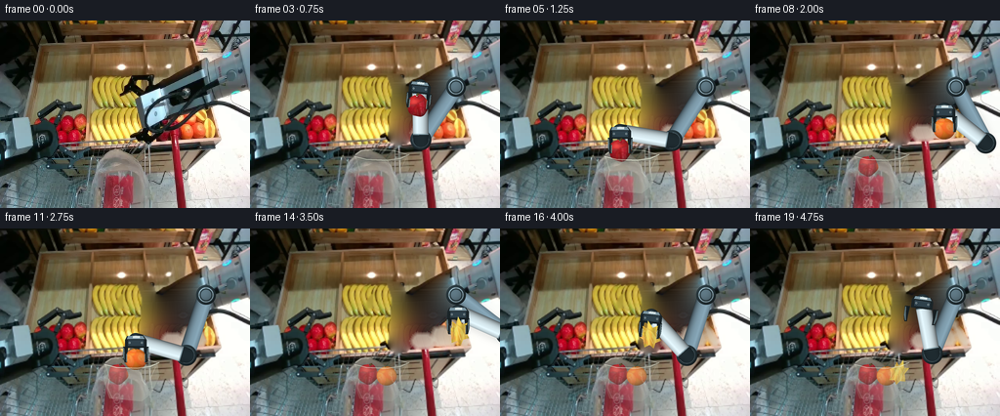
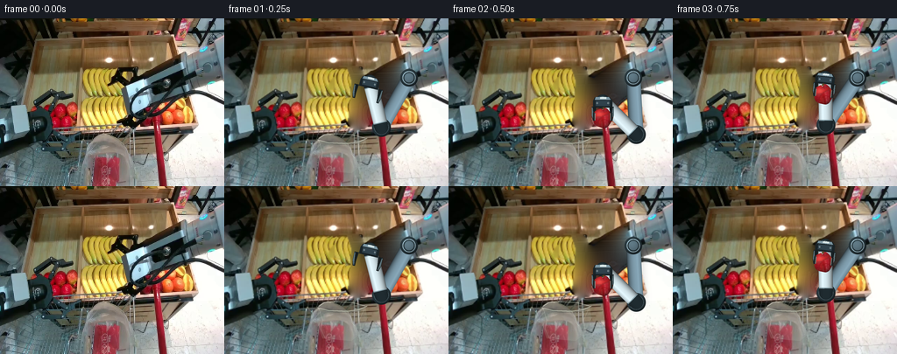

CODING AGENTS AS PIXEL WORLD MODELS
traex/GPT-6-Astra · common50_0000
点击播放 · 原生 RGB 像素
逐轮保存的候选
回放视频、检查图与代码变化。
每份候选均可单独播放。实际图片检查记录在下方工具轨迹中。
候选 01播放与检查图
点击播放 · 原生 RGB 像素


展开代码变化
--- 上一保存版本
+++ 本次保存版本
@@ -0,0 +1,324 @@
+"""Deterministic, local RGB animation. No models or external rendering engine."""
+from pathlib import Path
+import math
+import numpy as np
+from PIL import Image, ImageDraw, ImageFilter
+from scipy import ndimage
+import artifact_io
+
+ROOT=Path(__file__).resolve().parent
+W,H=256,192
+S=4
+rng=np.random.default_rng(1729)
+original=np.asarray(Image.open(ROOT/'first_frame.png').convert('RGB'))
+Y,X=np.mgrid[:H,:W]
+
+def polymask(points, feather=0):
+ im=Image.new('L',(W,H));ImageDraw.Draw(im).polygon(points,fill=255)
+ if feather: im=im.filter(ImageFilter.GaussianBlur(feather))
+ return np.asarray(im).astype(float)/255
+
+def fill_region(image, mask, rounds=420):
+ """Discrete harmonic hole fill with locally sampled photographic grain."""
+ m=mask>.05
+ inds=ndimage.distance_transform_edt(m,return_distances=False,return_indices=True)
+ out=image[inds[0],inds[1]].astype(float)
+ out[~m]=image[~m]
+ for i in range(rounds):
+ blur=ndimage.convolve(out,np.array([[0,1,0],[1,0,1],[0,1,0]])[:,:,None]/4,mode='nearest')
+ out[m]=blur[m]
+ # Grain prevents a perfectly synthetic smooth hole.
+ grain=(image.astype(float)-ndimage.gaussian_filter(image.astype(float),(1.0,1.0,0)))
+ grain=np.roll(grain,(41,63),(0,1))
+ out[m]+=grain[m]*.20
+ a=np.clip(mask,0,1)[...,None]
+ return image*(1-a)+out*a
+
+# Separate the mobile right manipulator from the fixed cart, left arm and tray.
+robot_poly=[(132,55),(151,55),(157,61),(158,67),(166,69),
+ (181,59),(195,49),(203,47),(201,56),(190,65),
+ (204,58),(212,59),(217,66),(215,77),(205,85),
+ (196,91),(189,98),(179,106),(170,113),(159,125),
+ (150,127),(143,120),(139,113),(139,91),(138,81),
+ (122,80),(120,77),(123,70),(129,65)]
+rm=polymask(robot_poly,.55)
+# Dark silhouette boundaries have a one-pixel optical edge.
+rm=ndimage.maximum_filter(rm, size=3)
+clean=fill_region(original,rm)
+# Preserve the slotted yellow cart wall underneath the withdrawn hand.
+cart=polymask([(126,56),(139,56),(144,71),(142,103),(140,117),(133,122),(126,121)],.7)*rm
+sample=original[Y, np.clip(X-28,0,W-1)].astype(float)
+clean=clean*(1-cart[...,None])+sample*cart[...,None]
+
+# Visible regions of the three fruit on the display plate.
+fruit_polys=[
+ [(163,114),(166,108),(171,105),(177,106),(181,105),(186,108),(190,112),(189,120),(183,123),(170,123),(165,120)],
+ [(185,105),(188,100),(193,99),(199,99),(205,102),(211,108),(212,115),(208,120),(200,121),(190,120),(185,116)],
+ [(204,89),(209,91),(213,95),(213,99),(218,104),(221,110),(224,116),(222,120),(217,120),(213,116),(209,109),(208,103),(202,101),(200,96)]
+]
+source_centers=[(176,114),(199,111),(213,105)]
+fruit_masks=[polymask(p,.65) for p in fruit_polys]
+allmask=np.maximum.reduce(fruit_masks)
+empty_tray=fill_region(clean,allmask,280)
+# Reconstruct the small pale tray surface where the individual fruit had rested.
+for k,m in enumerate(fruit_masks):
+ interior=ndimage.distance_transform_edt(m>.55)
+ a=np.minimum(interior/4,1)*.64
+ tray=np.zeros_like(clean)
+ shade=1-.09*np.clip((125-Y)/40,0,1)
+ tray[:,:,0]=222*shade;tray[:,:,1]=213*shade;tray[:,:,2]=194*shade
+ empty_tray=empty_tray*(1-a[...,None])+tray*a[...,None]
+
+# Complete photographic cutouts of the fruit, including their hidden surfaces.
+def fruit_sprite(kind):
+ n=44*S
+ yy,xx=np.mgrid[:n,:n].astype(float)
+ x=(xx+.5)/S-22;y=(yy+.5)/S-22
+ if kind==0:
+ # Apple: two shoulders and a subtle calyx depression, not a perfect ball.
+ theta=np.arctan2(y/11.5,x/11)
+ rad=1+.045*np.cos(theta*5)
+ rr=(x/11)**2+(y/11.5)**2
+ mask=rr<rad**2
+ mask &= ~((y<-9.1)&(abs(x)<1.4)&(y<-10.2+1.0*np.cos(x*1.4)))
+ z=np.sqrt(np.clip(1-rr,0,1))
+ light=np.clip(.50+.44*z-.18*x/11-.20*y/11.5,.27,1.12)
+ color=np.array([202,37,43])[None,None,:]*light[...,None]
+ blush=np.exp(-((x+3.6)**2/20+(y+4.3)**2/12))
+ color+=blush[...,None]*np.array([30,37,27])
+ tex=rng.normal(0,1.9,(n,n))
+ color+=tex[...,None]
+ elif kind==1:
+ rr=(x/11.3)**2+(y/10.8)**2;mask=rr<1
+ z=np.sqrt(np.clip(1-rr,0,1))
+ light=np.clip(.52+.43*z-.16*x/11-.22*y/11,.3,1.12)
+ color=np.array([252,133,39])[None,None,:]*light[...,None]
+ pores=rng.normal(0,3.0,(n,n))
+ pores-=ndimage.gaussian_filter(pores,1)
+ color+=pores[...,None]*np.array([1,.75,.35])
+ color+=np.exp(-((x+4)**2+(y+4)**2)/13)[...,None]*np.array([3,19,20])
+ else:
+ # Five-winged carambola, elongated and faceted with a five-point crown.
+ p=[(0,-15),(4.2,-7),(9.6,-8.5),(7.0,-.3),(11,7),(5.0,8.8),
+ (2.8,14),(-1,10),(-6.5,12),(-6.8,4),(-10.5,.5),(-6,-4),(-5.8,-10),(-1.8,-7)]
+ a=Image.new('L',(n,n));ImageDraw.Draw(a).polygon([((u+22)*S,(v+22)*S) for u,v in p],fill=255)
+ mask=np.asarray(a)>0
+ rr=(x/12)**2+(y/16)**2
+ ridge=.5+.5*np.cos((x+.17*y)*.72)
+ light=np.clip(.79+.19*ridge-.10*x/11-.08*y/15,.52,1.07)
+ color=np.array([252,216,79])[None,None,:]*light[...,None]
+ color+=rng.normal(0,1.2,(n,n))[...,None]
+ color=np.clip(color,0,255)
+ # Reuse actual RGB texture and color gradation at the visible source surfaces.
+ cx,cy=source_centers[kind]
+ sx=np.clip(np.rint(cx+x).astype(int),0,W-1);sy=np.clip(np.rint(cy+y).astype(int),0,H-1)
+ real=original[sy,sx].astype(float)
+ r,g,b=real.transpose(2,0,1)
+ if kind==0: valid=(r>90)&(r>g*1.65)&(r>b*1.35)
+ elif kind==1:valid=(r>160)&(g>68)&(g<r*.74)&(g>b*1.35)
+ else:valid=(r>150)&(g>125)&(g>b*1.25)
+ validity=ndimage.gaussian_filter(valid.astype(float),2)*.47
+ color=color*(1-validity[...,None])+real*validity[...,None]
+ arr=np.zeros((n,n,4),np.uint8);arr[:,:,:3]=color.astype(np.uint8);arr[:,:,3]=mask*255
+ im=Image.fromarray(arr)
+ d=ImageDraw.Draw(im)
+ if kind==0:
+ d.line([(22*S,12*S),(22.5*S,10.4*S),(24*S,9.9*S)],fill=(78,59,29,255),width=2*S)
+ d.line([(22.8*S,11.6*S),(22.7*S,10.7*S)],fill=(128,109,56,255),width=S//2)
+ if kind==1:
+ d.ellipse((21*S,11*S,23*S,12*S),fill=(129,103,31,255))
+ if kind==2:
+ d.line([(22*S,7.5*S),(20.8*S,19*S),(24.6*S,31*S)],fill=(255,238,134,210),width=S//2)
+ d.line([(16.5*S,14*S),(17.8*S,24*S),(16.0*S,32*S)],fill=(169,139,42,190),width=S//2)
+ return im
+sprites=[fruit_sprite(k) for k in range(3)]
+
+# Supersampled direct mathematical rasterization for rigid mechanical links.
+yh,xh=np.mgrid[:H*S,:W*S].astype(float);xh=(xh+.5)/S;yh=(yh+.5)/S
+micro=rng.normal(0,.65,(H*S,W*S))
+
+def blend(canvas,col,a):
+ if np.isscalar(a):a=np.full((H*S,W*S),a)
+ canvas[:]=canvas*(1-a[...,None])+col*a[...,None]
+
+def capsule(canvas,a,b,r,color,band=True):
+ a=np.asarray(a,float);b=np.asarray(b,float);v=b-a;L=np.linalg.norm(v);u=v/L;n=np.array([-u[1],u[0]])
+ t=(xh-a[0])*u[0]+(yh-a[1])*u[1]
+ side=(xh-a[0])*n[0]+(yh-a[1])*n[1]
+ edge=np.maximum(-t,0)+np.maximum(t-L,0)
+ dist=np.sqrt(side*side+edge*edge)
+ alpha=np.clip((r-dist)*S+.5,0,1)
+ q=np.clip(side/r,-1,1)
+ z=np.sqrt(1-q*q)
+ illumination=.43+.56*z-.18*q
+ illumination+=.055*np.exp(-((q+.45)/.14)**2)
+ col=np.array(color)[None,None,:]*illumination[...,None]
+ col+=micro[...,None]
+ if band:
+ collars=(t<6)|(t>L-6)
+ col[collars]=np.array([31,43,48])[None,:]*(.72+.3*z[collars,None])
+ ring=((t>5)&(t<6.1))|((t>L-7)&(t<L-6))
+ col[ring]=np.array([134,159,168])*(.65+.4*z[ring,None])
+ blend(canvas,np.clip(col,0,255),alpha)
+
+def joint(canvas,p,r):
+ dx=(xh-p[0])/r;dy=(yh-p[1])/r;rr=dx*dx+dy*dy
+ alpha=np.clip((1-np.sqrt(rr))*r*S+.5,0,1)
+ z=np.sqrt(np.clip(1-rr,0,1))
+ l=.5+.48*z-.13*dx-.17*dy
+ col=np.array([48,66,73])[None,None,:]*l[...,None]
+ ring=(rr<.58)&(rr>.44)
+ col[ring]=np.array([140,167,179])*(l[ring,None]+.15)
+ hub=rr<.28
+ col[hub]=np.array([86,109,120])*(l[hub,None]+.1)
+ blend(canvas,np.clip(col,0,255),alpha)
+ # A stationary machined spindle and four captive screw heads.
+ im=Image.fromarray(np.clip(canvas,0,255).astype(np.uint8));d=ImageDraw.Draw(im)
+ for angle in [0,math.pi/2,math.pi,math.pi*1.5]:
+ x=p[0]+r*.69*math.cos(angle);y=p[1]+r*.69*math.sin(angle)
+ d.ellipse(((x-.65)*S,(y-.65)*S,(x+.65)*S,(y+.65)*S),fill=(134,153,157))
+ d.line(((x-.3)*S,y*S,(x+.3)*S,y*S),fill=(43,52,57),width=1)
+ canvas[:]=np.asarray(im)
+
+BASE=np.array([211.,68.])
+L1,L2=65.,54.
+def elbow_for(wrist):
+ delta=np.asarray(wrist)-BASE;dist=np.linalg.norm(delta)
+ dist=np.clip(dist,abs(L1-L2)+.2,L1+L2-.2)
+ u=delta/np.linalg.norm(delta)
+ along=(L1*L1-L2*L2+dist*dist)/(2*dist)
+ height=np.sqrt(max(0,L1*L1-along*along))
+ # The elbow folds towards the foreground throughout; no branch switching.
+ normal=np.array([u[1],-u[0]])
+ return BASE+along*u+height*normal
+
+def rigid_hand(canvas,center,angle,gap,front=False):
+ center=np.array(center,float)
+ v=np.array([math.sin(angle),math.cos(angle)])
+ n=np.array([math.cos(angle),-math.sin(angle)])
+ wrist=center-19*v
+ def p(x,y):
+ z=center+n*x+v*y;return tuple(z*S)
+ im=Image.fromarray(np.clip(canvas,0,255).astype(np.uint8));d=ImageDraw.Draw(im)
+ def polygon(pts,c):d.polygon([p(x,y) for x,y in pts],fill=c)
+ if not front:
+ polygon([(-9,-24),(8,-24),(11,-20),(11,-12),(-11,-12),(-11,-20)],(26,36,40))
+ polygon([(-8,-24),(7,-24),(9,-21),(-9,-21)],(123,149,161))
+ polygon([(-8,-20),(8,-20),(8,-14),(-8,-14)],(47,65,75))
+ polygon([(-3,-24),(4,-24),(4,-22),(-3,-22)],(218,231,231))
+ for x in [-6.2,6.2]:
+ px,py=p(x,-17)
+ d.ellipse((px-S*.85,py-S*.85,px+S*.85,py+S*.85),fill=(159,177,182))
+ d.ellipse((px-S*.35,py-S*.35,px+S*.35,py+S*.35),fill=(29,38,43))
+ # Rigid opposing fingers translate on the linear jaw slide.
+ for side in [-1,1]:
+ g=side*gap/2
+ polygon([(g-side*3,-13),(g+side*2,-13),(g+side*2,-3),(g+side*.5,3),(g-side*2,3),(g-side*2,-3)],(22,30,33))
+ polygon([(g+side*1,-12),(g+side*1.8,-12),(g+side*1.8,-3),(g,2),(g-side*.8,2),(g+.2*side,-4)],(91,113,119))
+ else:
+ for side in [-1,1]:
+ g=side*gap/2
+ polygon([(g-side*2,-6),(g+side*.5,-6),(g+side*.5,3),(g-side*2,3)],(30,37,38))
+ polygon([(g-side*2,-5.5),(g-side*1.3,-5.5),(g-side*1.3,2.5),(g-side*2,2.5)],(126,133,126))
+ canvas[:]=np.asarray(im)
+ return wrist
+
+def draw_arm(canvas,hand,angle,gap):
+ v=np.array([math.sin(angle),math.cos(angle)])
+ wrist=np.asarray(hand)-19*v
+ elbow=elbow_for(wrist)
+ # Narrow cast shadow falls on the fixed support; geometry itself stays rigid.
+ shadow=Image.new('L',(W*S,H*S));d=ImageDraw.Draw(shadow)
+ d.line([tuple((BASE+[2.5,4])*S),tuple((elbow+[2.5,4])*S),tuple((wrist+[2.5,4])*S)],fill=43,width=18*S)
+ shadow=shadow.filter(ImageFilter.GaussianBlur(3*S))
+ a=np.asarray(shadow).astype(float)/255
+ blend(canvas,np.zeros_like(canvas),a*.50)
+ capsule(canvas,BASE,elbow,8.2,[128,158,174],True)
+ joint(canvas,BASE,10.1)
+ joint(canvas,elbow,10.8)
+ capsule(canvas,elbow,wrist,8.0,[216,234,240],True)
+ joint(canvas,wrist,7.0)
+ rigid_hand(canvas,hand,angle,gap)
+
+def composite_sprite(canvas,sprite,center,angle=0,scale=1,opacity=1):
+ sp=sprite
+ if scale!=1:sp=sp.resize((round(sp.width*scale),round(sp.height*scale)),Image.Resampling.LANCZOS)
+ if angle:sp=sp.rotate(angle,resample=Image.Resampling.BICUBIC,expand=True)
+ cx,cy=center;x=round(cx*S-sp.width/2);y=round(cy*S-sp.height/2)
+ layer=Image.new('RGBA',(W*S,H*S));layer.paste(sp,(x,y))
+ a=np.asarray(layer).astype(float)
+ blend(canvas,a[:,:,:3],a[:,:,3]/255*opacity)
+
+def bag_rim(canvas,front=False):
+ # Reuse the existing translucent bag and print, adding only its folded lip.
+ im=Image.new('RGBA',(W*S,H*S));d=ImageDraw.Draw(im)
+ if not front:
+ pts=[(106,137),(112,132),(129,131),(148,132),(163,137),(155,143),(127,145),(109,141)]
+ d.polygon([(x*S,y*S) for x,y in pts],fill=(43,54,48,75))
+ d.line([(108*S,137*S),(114*S,133*S),(129*S,132*S),(147*S,133*S),(161*S,137*S)],fill=(229,232,214,118),width=S)
+ else:
+ pts=[(107,139),(119,142),(143,142),(161,138),(163,151),(155,169),(145,177),(112,174),(106,156)]
+ d.polygon([(x*S,y*S) for x,y in pts],fill=(202,210,194,41))
+ d.line([(107*S,139*S),(119*S,142*S),(140*S,143*S),(154*S,141*S),(163*S,137*S)],fill=(239,243,223,152),width=S)
+ for pts in [[(108,140),(112,153),(110,163),(115,174)],[(159,142),(154,153),(156,166)],[(144,147),(145,155),(149,160)]]:
+ d.line([(x*S,y*S) for x,y in pts],fill=(233,240,224,95),width=S//2)
+ a=np.asarray(im).astype(float);blend(canvas,a[:,:,:3],a[:,:,3]/255)
+
+# Four samples per second: approach, close, lift clear, translate, lower, release.
+# hand position, fruit carried, grip aperture, yaw degrees, settled item count
+poses=[
+ ((137,76),None,29,-35,0),
+ ((162,91),None,29,-13,0),
+ ((176,114),0,21,0,0),
+ ((172,87),0,21,-6,0),
+ ((136,106),0,21,2,0),
+ ((123,133),0,21,0,0),
+ ((124,116),None,31,0,1),
+ ((188,91),None,29,3,1),
+ ((199,111),1,22,0,1),
+ ((194,86),1,22,3,1),
+ ((145,107),1,22,-3,1),
+ ((139,134),1,22,0,1),
+ ((140,115),None,32,0,2),
+ ((207,88),None,28,3,2),
+ ((213,105),2,19,0,2),
+ ((202,85),2,19,5,2),
+ ((153,109),2,19,-6,2),
+ ((151,133),2,19,-8,2),
+ ((150,113),None,30,-4,3),
+ ((174,94),None,30,-8,3)
+]
+settled_positions=[(121,149),(140,151),(152,147)]
+frames=[original.copy()]
+for f in range(1,20):
+ hand,carried,gap,angle,settled=poses[f]
+ # Once taken, a fruit never reappears on the display plate.
+ taken=[f>=2,f>=8,f>=14]
+ bg=empty_tray.copy()
+ for k,m in enumerate(fruit_masks):
+ if not taken[k]:
+ bg=bg*(1-m[...,None])+clean*m[...,None]
+ # The restored original borders and all unmoving scene pixels are retained.
+ base=Image.fromarray(np.clip(bg,0,255).astype(np.uint8)).resize((W*S,H*S),Image.Resampling.BICUBIC)
+ canvas=np.asarray(base).astype(float).copy()
+ bag_rim(canvas,False)
+ for k in range(settled):
+ dest=settled_positions[k]
+ composite_sprite(canvas,sprites[k],dest,[-12,9,-21][k],.91,.87)
+ bag_rim(canvas,True)
+ rad=math.radians(angle)
+ draw_arm(canvas,np.array(hand,float),rad,gap)
+ if carried is not None:
+ # fruit and closing fingers share one rigid end-effector transform
+ composite_sprite(canvas,sprites[carried],hand,-angle,1)
+ if f in (5,11,17):
+ # Descent passes through the mouth rather than floating over its front.
+ bag_rim(canvas,True)
+ rigid_hand(canvas,hand,rad,gap,True)
+ # Spatial antialiasing retains fine seams and the photographic RGB grain.
+ frame=np.asarray(Image.fromarray(np.uint8(np.clip(canvas,0,255))).resize((W,H),Image.Resampling.LANCZOS))
+ frames.append(frame)
+frames=np.stack(frames).astype(np.uint8)
+assert np.array_equal(frames[0],original)
+artifact_io.save(frames,ROOT)
+print('Saved',frames.shape,'RGB frames; first frame is pixel-identical.')
候选 02播放与检查图
点击播放 · 原生 RGB 像素

展开代码变化
--- 上一保存版本
+++ 本次保存版本
@@ -273,13 +273,13 @@
((172,87),0,21,-6,0),
((136,106),0,21,2,0),
((123,133),0,21,0,0),
- ((124,116),None,31,0,1),
+ ((154,99),None,31,-2,1),
((188,91),None,29,3,1),
((199,111),1,22,0,1),
((194,86),1,22,3,1),
((145,107),1,22,-3,1),
((139,134),1,22,0,1),
- ((140,115),None,32,0,2),
+ ((174,100),None,32,2,2),
((207,88),None,28,3,2),
((213,105),2,19,0,2),
((202,85),2,19,5,2),
@@ -316,7 +316,11 @@
bag_rim(canvas,True)
rigid_hand(canvas,hand,rad,gap,True)
# Spatial antialiasing retains fine seams and the photographic RGB grain.
- frame=np.asarray(Image.fromarray(np.uint8(np.clip(canvas,0,255))).resize((W,H),Image.Resampling.LANCZOS))
+ frame=np.asarray(Image.fromarray(np.uint8(np.clip(canvas,0,255))).resize((W,H),Image.Resampling.LANCZOS)).astype(float)
+ # Remove the up/down-sampling residual from untouched photographed regions.
+ # This holds all stationary background RGB values exactly, frame to frame.
+ reference=np.asarray(base.resize((W,H),Image.Resampling.LANCZOS)).astype(float)
+ frame=np.uint8(np.clip(np.rint(bg)+frame-reference,0,255))
frames.append(frame)
frames=np.stack(frames).astype(np.uint8)
assert np.array_equal(frames[0],original)
候选 03播放与检查图
可观测工具轨迹
实际执行的命令与返回图片。
命令 1exit 0
/bin/bash -lc "ls -la && cat prompt.txt && printf '\\n---RULES---\\n' && cat GENERATION_RULES.md"
命令 2exit 0
/bin/bash -lc "cat task_spec.json && cat artifact_io.py && python - <<'PY'
from PIL import Image
import numpy as np
im=np.array(Image.open('first_frame.png'))
print(im.shape)
for y in range(0,192,6):
s=''
for x in range(0,256,4):
r,g,b=im[y:y+6,x:x+4,:3].mean((0,1))
v=max(r,g,b); m=min(r,g,b)
if v-m<14:
c=' ' if v>220 else '.' if v>165 else ':' if v>110 else '+' if v>65 else '#' if v>30 else '@'
elif r>1.4*g and r>1.4*b:c='R'
elif r>1.3*b and g>1.2*b:c='Y' if g>.75*r else 'o'
elif b>r*1.15 and b>g*1.05:c='B'
elif g>r*1.1 and g>b*1.05:c='G'
else:c='~'
s+=c
print(f'{y:03} '+s)
PY"命令 3exit 0
/bin/bash -lc "python - <<'PY'
from PIL import Image
import numpy as np
im=np.array(Image.open('first_frame.png').convert('RGB'))
# numerical palette clustering
p=im.reshape(-1,3).astype(float);rng=np.random.default_rng(2);c=p[rng.choice(len(p),20,False)]
for _ in range(30):
d=((p[:,None]-c[None])**2).sum(2);a=d.argmin(1);c=np.array([p[a==i].mean(0) for i in range(20)])
ix=np.argsort(c.mean(1));c=c[ix]
print('Palette')
for i,v in enumerate(c):print(chr(65+i),v.round().astype(int), 'count',(((p[:,None]-c[None])**2).sum(2).argmin(1)==i).sum())
small=np.array(Image.fromarray(im).resize((128,96),Image.Resampling.BOX));lab=((small[:,:,None,:]-c[None,None])**2).sum(3).argmin(2)
print(' '+''.join(str((i//5)%10) if i%5==0 else ' ' for i in range(128)))
for y,row in enumerate(lab):print(f'{y*2:03} '+''.join(chr(65+i) for i in row))
PY"命令 4exit 0
/bin/bash -lc "python - <<'PY'
import numpy as np
from PIL import Image
im=Image.open('first_frame.png').convert('RGB')
a=np.array(im.resize((128,96))).astype(float);l=a@np.array([.299,.587,.114]);ch='@%#*+=-:. '
for y,row in enumerate(l):print(f'{y*2:03} '+''.join(ch[min(9,int(v/256*10))] for v in row))
# salient color connected components
import scipy.ndimage as nd
p=np.array(im).astype(float);r,g,b=p.transpose(2,0,1)
for name,m in [('red',(r>100)&(r>g*1.6)&(r>b*1.4)),('orange',(r>130)&(g>70)&(g<r*.78)&(g>b*1.4)),('yellow',(r>170)&(g>140)&(b<g*.8)),('white',(r>190)&(g>190)&(b>180))]:
la,n=nd.label(m);ob=nd.find_objects(la);counts=np.bincount(la.flatten())
print(name)
for i in sorted(range(1,n+1),key=lambda i:counts[i],reverse=True)[:15]:
print(counts[i],ob[i-1],nd.center_of_mass(m,la,i))
PY"命令 5exit 0
/bin/bash -lc "python - <<'PY'
from PIL import Image
import numpy as np
im=np.array(Image.open('first_frame.png').convert('RGB')).astype(float)
for box in [(110,52,212,128),(160,86,226,128),(30,80,93,130),(90,55,148,130)]:
x0,y0,x1,y1=box; print('\\nCROP',box)
for y in range(y0,y1):
s=''
for x in range(x0,x1):
r,g,b=im[y,x];v=(r+g+b)/3
if r>1.5*g and r>1.3*b and r>100:c='R'
elif r>g*1.18 and g>b*1.3 and r>100:c='Y' if g>130 else 'o'
elif r>b*1.4 and g>b*1.2 and g>130:c='y'
else:c=' .:-=+*#%@'[min(9,int((255-v)/256*10))]
s+=c
print(f'{y:03} '+s)
PY"命令 6exit 0
/bin/bash -lc "python - <<'PY'
from PIL import Image
import numpy as np
im=np.array(Image.open('first_frame.png')).astype(float)
# Print manually focused yellow field with coarse exact color as pairs (brightness and hue).
for box,step in [((0,0,256,192),4),((82,50,148,126),2),((128,32,228,126),2)]:
x0,y0,x1,y1=box; print('BBOX',box)
print(' '+''.join(str(x//10%10) for x in range(x0,x1,step)))
print(' '+''.join(str(x%10) for x in range(x0,x1,step)))
for y in range(y0,y1,step):
s=''
for x in range(x0,x1,step):
r,g,b=im[y:y+step,x:x+step,:3].mean((0,1));l=.299*r+.587*g+.114*b
if r>g*1.45 and r>100: c='r'
elif r>g*1.2 and g>b*1.35: c='o' if g>75 else '.'
elif r>b*1.35 and g>b*1.2 and g>125: c='Y'
else:c=' .:-=+*#%@'[min(9,int((255-l)/256*10))]
s+=c
print(f'{y:03} '+s)
PY"命令 7exit 0
/bin/bash -lc "python - <<'PY'
from PIL import Image
import numpy as np
im=np.array(Image.open('first_frame.png')).astype(float)
# RGB scan key positions
for y in [20,35,45,60,75,85,95,105,115,125,140,155,170]:
print(y,[(x,tuple(im[y,x].astype(int))) for x in range(20,256,10)])
# dark boundaries at reduced scale
p=im.reshape(192,128,2,3).mean(2);r,g,b=p.transpose(2,0,1)
for y in range(0,192,2):
s=''
for x in range(128):
v=p[y:y+2,x].mean(0);r,g,b=v;light=v.mean()
if light<22:c='@'
elif light<42:c='#'
elif light>210:c=' '
elif r>1.5*g and r>1.5*b and r>100:c='R'
elif r>160 and g>120 and g>b*1.3:c='Y'
else:c='.'
s+=c
print(f'{y:03} '+s)
PY"命令 8exit 0
/bin/bash -lc "python - <<'PY' import importlib.util for m in ['cv2','scipy','numpy','PIL']: print(m,bool(importlib.util.find_spec(m))) PY"
命令 9exit 0
/bin/bash -lc "cat > generate.py <<'PY'
\"\"\"Deterministic, local RGB animation. No models or external rendering engine.\"\"\"
from pathlib import Path
import math
import numpy as np
from PIL import Image, ImageDraw, ImageFilter
from scipy import ndimage
import artifact_io
ROOT=Path(__file__).resolve().parent
W,H=256,192
S=4
rng=np.random.default_rng(1729)
original=np.asarray(Image.open(ROOT/'first_frame.png').convert('RGB'))
Y,X=np.mgrid[:H,:W]
def polymask(points, feather=0):
im=Image.new('L',(W,H));ImageDraw.Draw(im).polygon(points,fill=255)
if feather: im=im.filter(ImageFilter.GaussianBlur(feather))
return np.asarray(im).astype(float)/255
def fill_region(image, mask, rounds=420):
\"\"\"Discrete harmonic hole fill with locally sampled photographic grain.\"\"\"
m=mask>.05
inds=ndimage.distance_transform_edt(m,return_distances=False,return_indices=True)
out=image[inds[0],inds[1]].astype(float)
out[~m]=image[~m]
for i in range(rounds):
blur=ndimage.convolve(out,np.array([[0,1,0],[1,0,1],[0,1,0]])[:,:,None]/4,mode='nearest')
out[m]=blur[m]
# Grain prevents a perfectly synthetic smooth hole.
grain=(image.astype(float)-ndimage.gaussian_filter(image.astype(float),(1.0,1.0,0)))
grain=np.roll(grain,(41,63),(0,1))
out[m]+=grain[m]*.20
a=np.clip(mask,0,1)[...,None]
return image*(1-a)+out*a
# Separate the mobile right manipulator from the fixed cart, left arm and tray.
robot_poly=[(132,55),(151,55),(157,61),(158,67),(166,69),
(181,59),(195,49),(203,47),(201,56),(190,65),
(204,58),(212,59),(217,66),(215,77),(205,85),
(196,91),(189,98),(179,106),(170,113),(159,125),
(150,127),(143,120),(139,113),(139,91),(138,81),
(122,80),(120,77),(123,70),(129,65)]
rm=polymask(robot_poly,.55)
# Dark silhouette boundaries have a one-pixel optical edge.
rm=ndimage.maximum_filter(rm, size=3)
clean=fill_region(original,rm)
# Preserve the slotted yellow cart wall underneath the withdrawn hand.
cart=polymask([(126,56),(139,56),(144,71),(142,103),(140,117),(133,122),(126,121)],.7)*rm
sample=original[Y, np.clip(X-28,0,W-1)].astype(float)
clean=clean*(1-cart[...,None])+sample*cart[...,None]
# Visible regions of the three fruit on the display plate.
fruit_polys=[
[(163,114),(166,108),(171,105),(177,106),(181,105),(186,108),(190,112),(189,120),(183,123),(170,123),(165,120)],
[(185,105),(188,100),(193,99),(199,99),(205,102),(211,108),(212,115),(208,120),(200,121),(190,120),(185,116)],
[(204,89),(209,91),(213,95),(213,99),(218,104),(221,110),(224,116),(222,120),(217,120),(213,116),(209,109),(208,103),(202,101),(200,96)]
]
source_centers=[(176,114),(199,111),(213,105)]
fruit_masks=[polymask(p,.65) for p in fruit_polys]
allmask=np.maximum.reduce(fruit_masks)
empty_tray=fill_region(clean,allmask,280)
# Reconstruct the small pale tray surface where the individual fruit had rested.
for k,m in enumerate(fruit_masks):
interior=ndimage.distance_transform_edt(m>.55)
a=np.minimum(interior/4,1)*.64
tray=np.zeros_like(clean)
shade=1-.09*np.clip((125-Y)/40,0,1)
tray[:,:,0]=222*shade;tray[:,:,1]=213*shade;tray[:,:,2]=194*shade
empty_tray=empty_tray*(1-a[...,None])+tray*a[...,None]
# Complete photographic cutouts of the fruit, including their hidden surfaces.
def fruit_sprite(kind):
n=44*S
yy,xx=np.mgrid[:n,:n].astype(float)
x=(xx+.5)/S-22;y=(yy+.5)/S-22
if kind==0:
# Apple: two shoulders and a subtle calyx depression, not a perfect ball.
theta=np.arctan2(y/11.5,x/11)
rad=1+.045*np.cos(theta*5)
rr=(x/11)**2+(y/11.5)**2
mask=rr<rad**2
mask &= ~((y<-9.1)&(abs(x)<1.4)&(y<-10.2+1.0*np.cos(x*1.4)))
z=np.sqrt(np.clip(1-rr,0,1))
light=np.clip(.50+.44*z-.18*x/11-.20*y/11.5,.27,1.12)
color=np.array([202,37,43])[None,None,:]*light[...,None]
blush=np.exp(-((x+3.6)**2/20+(y+4.3)**2/12))
color+=blush[...,None]*np.array([30,37,27])
tex=rng.normal(0,1.9,(n,n))
color+=tex[...,None]
elif kind==1:
rr=(x/11.3)**2+(y/10.8)**2;mask=rr<1
z=np.sqrt(np.clip(1-rr,0,1))
light=np.clip(.52+.43*z-.16*x/11-.22*y/11,.3,1.12)
color=np.array([252,133,39])[None,None,:]*light[...,None]
pores=rng.normal(0,3.0,(n,n))
pores-=ndimage.gaussian_filter(pores,1)
color+=pores[...,None]*np.array([1,.75,.35])
color+=np.exp(-((x+4)**2+(y+4)**2)/13)[...,None]*np.array([3,19,20])
else:
# Five-winged carambola, elongated and faceted with a five-point crown.
p=[(0,-15),(4.2,-7),(9.6,-8.5),(7.0,-.3),(11,7),(5.0,8.8),
(2.8,14),(-1,10),(-6.5,12),(-6.8,4),(-10.5,.5),(-6,-4),(-5.8,-10),(-1.8,-7)]
a=Image.new('L',(n,n));ImageDraw.Draw(a).polygon([((u+22)*S,(v+22)*S) for u,v in p],fill=255)
mask=np.asarray(a)>0
rr=(x/12)**2+(y/16)**2
ridge=.5+.5*np.cos((x+.17*y)*.72)
light=np.clip(.79+.19*ridge-.10*x/11-.08*y/15,.52,1.07)
color=np.array([252,216,79])[None,None,:]*light[...,None]
color+=rng.normal(0,1.2,(n,n))[...,None]
color=np.clip(color,0,255)
# Reuse actual RGB texture and color gradation at the visible source surfaces.
cx,cy=source_centers[kind]
sx=np.clip(np.rint(cx+x).astype(int),0,W-1);sy=np.clip(np.rint(cy+y).astype(int),0,H-1)
real=original[sy,sx].astype(float)
r,g,b=real.transpose(2,0,1)
if kind==0: valid=(r>90)&(r>g*1.65)&(r>b*1.35)
elif kind==1:valid=(r>160)&(g>68)&(g<r*.74)&(g>b*1.35)
else:valid=(r>150)&(g>125)&(g>b*1.25)
validity=ndimage.gaussian_filter(valid.astype(float),2)*.47
color=color*(1-validity[...,None])+real*validity[...,None]
arr=np.zeros((n,n,4),np.uint8);arr[:,:,:3]=color.astype(np.uint8);arr[:,:,3]=mask*255
im=Image.fromarray(arr)
d=ImageDraw.Draw(im)
if kind==0:
d.line([(22*S,12*S),(22.5*S,10.4*S),(24*S,9.9*S)],fill=(78,59,29,255),width=2*S)
d.line([(22.8*S,11.6*S),(22.7*S,10.7*S)],fill=(128,109,56,255),width=S//2)
if kind==1:
d.ellipse((21*S,11*S,23*S,12*S),fill=(129,103,31,255))
if kind==2:
d.line([(22*S,7.5*S),(20.8*S,19*S),(24.6*S,31*S)],fill=(255,238,134,210),width=S//2)
d.line([(16.5*S,14*S),(17.8*S,24*S),(16.0*S,32*S)],fill=(169,139,42,190),width=S//2)
return im
sprites=[fruit_sprite(k) for k in range(3)]
# Supersampled direct mathematical rasterization for rigid mechanical links.
yh,xh=np.mgrid[:H*S,:W*S].astype(float);xh=(xh+.5)/S;yh=(yh+.5)/S
micro=rng.normal(0,.65,(H*S,W*S))
def blend(canvas,col,a):
if np.isscalar(a):a=np.full((H*S,W*S),a)
canvas[:]=canvas*(1-a[...,None])+col*a[...,None]
def capsule(canvas,a,b,r,color,band=True):
a=np.asarray(a,float);b=np.asarray(b,float);v=b-a;L=np.linalg.norm(v);u=v/L;n=np.array([-u[1],u[0]])
t=(xh-a[0])*u[0]+(yh-a[1])*u[1]
side=(xh-a[0])*n[0]+(yh-a[1])*n[1]
edge=np.maximum(-t,0)+np.maximum(t-L,0)
dist=np.sqrt(side*side+edge*edge)
alpha=np.clip((r-dist)*S+.5,0,1)
q=np.clip(side/r,-1,1)
z=np.sqrt(1-q*q)
illumination=.43+.56*z-.18*q
illumination+=.055*np.exp(-((q+.45)/.14)**2)
col=np.array(color)[None,None,:]*illumination[...,None]
col+=micro[...,None]
if band:
collars=(t<6)|(t>L-6)
col[collars]=np.array([31,43,48])[None,:]*(.72+.3*z[collars,None])
ring=((t>5)&(t<6.1))|((t>L-7)&(t<L-6))
col[ring]=np.array([134,159,168])*(.65+.4*z[ring,None])
blend(canvas,np.clip(col,0,255),alpha)
def joint(canvas,p,r):
dx=(xh-p[0])/r;dy=(yh-p[1])/r;rr=dx*dx+dy*dy
alpha=np.clip((1-np.sqrt(rr))*r*S+.5,0,1)
z=np.sqrt(np.clip(1-rr,0,1))
l=.5+.48*z-.13*dx-.17*dy
col=np.array([48,66,73])[None,None,:]*l[...,None]
ring=(rr<.58)&(rr>.44)
col[ring]=np.array([140,167,179])*(l[ring,None]+.15)
hub=rr<.28
col[hub]=np.array([86,109,120])*(l[hub,None]+.1)
blend(canvas,np.clip(col,0,255),alpha)
# A stationary machined spindle and four captive screw heads.
im=Image.fromarray(np.clip(canvas,0,255).astype(np.uint8));d=ImageDraw.Draw(im)
for angle in [0,math.pi/2,math.pi,math.pi*1.5]:
x=p[0]+r*.69*math.cos(angle);y=p[1]+r*.69*math.sin(angle)
d.ellipse(((x-.65)*S,(y-.65)*S,(x+.65)*S,(y+.65)*S),fill=(134,153,157))
d.line(((x-.3)*S,y*S,(x+.3)*S,y*S),fill=(43,52,57),width=1)
canvas[:]=np.asarray(im)
BASE=np.array([211.,68.])
L1,L2=65.,54.
def elbow_for(wrist):
delta=np.asarray(wrist)-BASE;dist=np.linalg.norm(delta)
dist=np.clip(dist,abs(L1-L2)+.2,L1+L2-.2)
u=delta/np.linalg.norm(delta)
along=(L1*L1-L2*L2+dist*dist)/(2*dist)
height=np.sqrt(max(0,L1*L1-along*along))
# The elbow folds towards the foreground throughout; no branch switching.
normal=np.array([u[1],-u[0]])
return BASE+along*u+height*normal
def rigid_hand(canvas,center,angle,gap,front=False):
center=np.array(center,float)
v=np.array([math.sin(angle),math.cos(angle)])
n=np.array([math.cos(angle),-math.sin(angle)])
wrist=center-19*v
def p(x,y):
z=center+n*x+v*y;return tuple(z*S)
im=Image.fromarray(np.clip(canvas,0,255).astype(np.uint8));d=ImageDraw.Draw(im)
def polygon(pts,c):d.polygon([p(x,y) for x,y in pts],fill=c)
if not front:
polygon([(-9,-24),(8,-24),(11,-20),(11,-12),(-11,-12),(-11,-20)],(26,36,40))
polygon([(-8,-24),(7,-24),(9,-21),(-9,-21)],(123,149,161))
polygon([(-8,-20),(8,-20),(8,-14),(-8,-14)],(47,65,75))
polygon([(-3,-24),(4,-24),(4,-22),(-3,-22)],(218,231,231))
for x in [-6.2,6.2]:
px,py=p(x,-17)
d.ellipse((px-S*.85,py-S*.85,px+S*.85,py+S*.85),fill=(159,177,182))
d.ellipse((px-S*.35,py-S*.35,px+S*.35,py+S*.35),fill=(29,38,43))
# Rigid opposing fingers translate on the linear jaw slide.
for side in [-1,1]:
g=side*gap/2
polygon([(g-side*3,-13),(g+side*2,-13),(g+side*2,-3),(g+side*.5,3),(g-side*2,3),(g-side*2,-3)],(22,30,33))
polygon([(g+side*1,-12),(g+side*1.8,-12),(g+side*1.8,-3),(g,2),(g-side*.8,2),(g+.2*side,-4)],(91,113,119))
else:
for side in [-1,1]:
g=side*gap/2
polygon([(g-side*2,-6),(g+side*.5,-6),(g+side*.5,3),(g-side*2,3)],(30,37,38))
polygon([(g-side*2,-5.5),(g-side*1.3,-5.5),(g-side*1.3,2.5),(g-side*2,2.5)],(126,133,126))
canvas[:]=np.asarray(im)
return wrist
def draw_arm(canvas,hand,angle,gap):
v=np.array([math.sin(angle),math.cos(angle)])
wrist=np.asarray(hand)-19*v
elbow=elbow_for(wrist)
# Narrow cast shadow falls on the fixed support; geometry itself stays rigid.
shadow=Image.new('L',(W*S,H*S));d=ImageDraw.Draw(shadow)
d.line([tuple((BASE+[2.5,4])*S),tuple((elbow+[2.5,4])*S),tuple((wrist+[2.5,4])*S)],fill=43,width=18*S)
shadow=shadow.filter(ImageFilter.GaussianBlur(3*S))
a=np.asarray(shadow).astype(float)/255
blend(canvas,np.zeros_like(canvas),a*.50)
capsule(canvas,BASE,elbow,8.2,[128,158,174],True)
joint(canvas,BASE,10.1)
joint(canvas,elbow,10.8)
capsule(canvas,elbow,wrist,8.0,[216,234,240],True)
joint(canvas,wrist,7.0)
rigid_hand(canvas,hand,angle,gap)
def composite_sprite(canvas,sprite,center,angle=0,scale=1,opacity=1):
sp=sprite
if scale"'!=1:sp=sp.resize((round(sp.width*scale),round(sp.height*scale)),Image.Resampling.LANCZOS)
if angle:sp=sp.rotate(angle,resample=Image.Resampling.BICUBIC,expand=True)
cx,cy=center;x=round(cx*S-sp.width/2);y=round(cy*S-sp.height/2)
layer=Image.new('"'RGBA',(W*S,H*S));layer.paste(sp,(x,y))
a=np.asarray(layer).astype(float)
blend(canvas,a[:,:,:3],a[:,:,3]/255*opacity)
def bag_rim(canvas,front=False):
# Reuse the existing translucent bag and print, adding only its folded lip.
im=Image.new('RGBA',(W*S,H*S));d=ImageDraw.Draw(im)
if not front:
pts=[(106,137),(112,132),(129,131),(148,132),(163,137),(155,143),(127,145),(109,141)]
d.polygon([(x*S,y*S) for x,y in pts],fill=(43,54,48,75))
d.line([(108*S,137*S),(114*S,133*S),(129*S,132*S),(147*S,133*S),(161*S,137*S)],fill=(229,232,214,118),width=S)
else:
pts=[(107,139),(119,142),(143,142),(161,138),(163,151),(155,169),(145,177),(112,174),(106,156)]
d.polygon([(x*S,y*S) for x,y in pts],fill=(202,210,194,41))
d.line([(107*S,139*S),(119*S,142*S),(140*S,143*S),(154*S,141*S),(163*S,137*S)],fill=(239,243,223,152),width=S)
for pts in [[(108,140),(112,153),(110,163),(115,174)],[(159,142),(154,153),(156,166)],[(144,147),(145,155),(149,160)]]:
d.line([(x*S,y*S) for x,y in pts],fill=(233,240,224,95),width=S//2)
a=np.asarray(im).astype(float);blend(canvas,a[:,:,:3],a[:,:,3]/255)
# Four samples per second: approach, close, lift clear, translate, lower, release.
# hand position, fruit carried, grip aperture, yaw degrees, settled item count
poses=[
((137,76),None,29,-35,0),
((162,91),None,29,-13,0),
((176,114),0,21,0,0),
((172,87),0,21,-6,0),
((136,106),0,21,2,0),
((123,133),0,21,0,0),
((124,116),None,31,0,1),
((188,91),None,29,3,1),
((199,111),1,22,0,1),
((194,86),1,22,3,1),
((145,107),1,22,-3,1),
((139,134),1,22,0,1),
((140,115),None,32,0,2),
((207,88),None,28,3,2),
((213,105),2,19,0,2),
((202,85),2,19,5,2),
((153,109),2,19,-6,2),
((151,133),2,19,-8,2),
((150,113),None,30,-4,3),
((174,94),None,30,-8,3)
]
settled_positions=[(121,149),(140,151),(152,147)]
frames=[original.copy()]
for f in range(1,20):
hand,carried,gap,angle,settled=poses[f]
# Once taken, a fruit never reappears on the display plate.
taken=[f>=2,f>=8,f>=14]
bg=empty_tray.copy()
for k,m in enumerate(fruit_masks):
if not taken[k]:
bg=bg*(1-m[...,None])+clean*m[...,None]
# The restored original borders and all unmoving scene pixels are retained.
base=Image.fromarray(np.clip(bg,0,255).astype(np.uint8)).resize((W*S,H*S),Image.Resampling.BICUBIC)
canvas=np.asarray(base).astype(float).copy()
bag_rim(canvas,False)
for k in range(settled):
dest=settled_positions[k]
composite_sprite(canvas,sprites[k],dest,[-12,9,-21][k],.91,.87)
bag_rim(canvas,True)
rad=math.radians(angle)
draw_arm(canvas,np.array(hand,float),rad,gap)
if carried is not None:
# fruit and closing fingers share one rigid end-effector transform
composite_sprite(canvas,sprites[carried],hand,-angle,1)
if f in (5,11,17):
# Descent passes through the mouth rather than floating over its front.
bag_rim(canvas,True)
rigid_hand(canvas,hand,rad,gap,True)
# Spatial antialiasing retains fine seams and the photographic RGB grain.
frame=np.asarray(Image.fromarray(np.uint8(np.clip(canvas,0,255))).resize((W,H),Image.Resampling.LANCZOS))
frames.append(frame)
frames=np.stack(frames).astype(np.uint8)
assert np.array_equal(frames[0],original)
artifact_io.save(frames,ROOT)
print('Saved',frames.shape,'RGB frames; first frame is pixel-identical.')
PY
python generate.py"命令 10exit 0
/bin/bash -lc "python - <<'PY'
from pathlib import Path
from PIL import Image
import numpy as np
z=np.load('pixels.npz')['pixels']; print(z.shape,z.dtype)
print('files', len(list(Path('frames').glob('*.png'))))
a=np.asarray(Image.open('frames/00.png'));b=np.asarray(Image.open('first_frame.png'));print('first_equal',np.array_equal(a,b))
for i in [1,2,3,5,8,11,14,17,19]:
im=np.asarray(Image.open(f'frames/{i:02}.png'));delta=np.abs(im.astype(float)-a.astype(float));print(i,'mean delta',delta.mean().round(2),'large pixel changes',(delta.max(2)>35).sum())
BASE=np.array([211.,68.]);L1=65;L2=54
for c,ang in [((137,76),-35),((162,91),-13),((151,86),-13),((176,114),0),((123,133),0),((213,105),0)]:
v=np.array([np.sin(np.deg2rad(ang)),np.cos(np.deg2rad(ang))]);w=np.array(c)-19*v;d=w-BASE;D=np.linalg.norm(d);u=d/D;a=(65**2-54**2+D**2)/(2*D);h=np.sqrt(65**2-a*a);e=BASE+a*u+h*np.array([u[1],-u[0]])
print(c,'wrist',w,'elbow',e)
PY"命令 11exit 0
/bin/bash -lc "python generate.py && python - <<'PY'
from pathlib import Path
from PIL import Image
import numpy as np
f=np.stack([np.array(Image.open(f'frames/{i:02d}.png')) for i in range(20)])
a=np.array(Image.open('first_frame.png'))
assert f.shape==(20,192,256,3) and f.dtype==np.uint8
assert np.array_equal(f[0],a)
z=np.load('pixels.npz')['pixels']
packed=(f[:,:,:,0].astype(np.uint32)<<16)|(f[:,:,:,1].astype(np.uint32)<<8)|f[:,:,:,2]
assert np.array_equal(z,packed.transpose(1,2,0))
for name in ['generate.py','pixels.npz','index.html','inspection.png','transition_check.png']:
p=Path(name);assert p.exists() and p.stat().st_size>0;print(name,p.stat().st_size)
print('All required artifacts validated.')
PY"保存候选 3 份；完成命令 11 次；可验证图片返回 0 张。原始 API 响应与完整日志保留在本地。